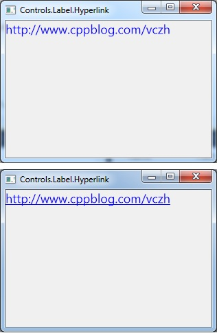

Label.Hyperlink

#include "..\..\Public\Source\GacUIIncludes.h"
#include <Windows.h>
int CALLBACK WinMain(HINSTANCE hInstance, HINSTANCE hPrevInstance, LPSTR lpCmdLine, int CmdShow)
{
return SetupWindowsDirect2DRenderer();
}
class HyperlinkWindow : public GuiWindow
{
private:
GuiLabel* labelHyperlink;
void labelHyperlink_OnMouseEnter(GuiGraphicsComposition* sender, GuiEventArgs& arguments)
{
FontProperties font=labelHyperlink->GetFont();
font.underline=true;
labelHyperlink->SetFont(font);
}
void labelHyperlink_OnMouseLeave(GuiGraphicsComposition* sender, GuiEventArgs& arguments)
{
FontProperties font=labelHyperlink->GetFont();
font.underline=false;
labelHyperlink->SetFont(font);
}
void labelHyperlink_OnLeftButtonDown(GuiGraphicsComposition* sender, GuiMouseEventArgs& arguments)
{
ShellExecute(NULL, L"OPEN", L"http://www.cppblog.com/vczh", NULL, NULL, SW_SHOWNORMAL);
}
public:
HyperlinkWindow()
:GuiWindow(GetCurrentTheme()->CreateWindowStyle())
{
this->SetText(L"Controls.Label.Hyperlink");
this->SetClientSize(Size(300, 200));
this->MoveToScreenCenter();
labelHyperlink=g::NewLabel();
labelHyperlink->SetText(L"http://www.cppblog.com/vczh");
labelHyperlink->SetTextColor(Color(0, 0, 255));
{
FontProperties font;
font.fontFamily=L"Segoe UI";
font.size=18;
font.antialias=true;
labelHyperlink->SetFont(font);
}
{
INativeCursor* hand=GetCurrentController()->ResourceService()->GetSystemCursor(INativeCursor::Hand);
labelHyperlink->GetBoundsComposition()->SetAssociatedCursor(hand);
}
labelHyperlink->GetEventReceiver()->mouseEnter.AttachMethod(
this, &HyperlinkWindow::labelHyperlink_OnMouseEnter
);
labelHyperlink->GetEventReceiver()->mouseLeave.AttachMethod(
this, &HyperlinkWindow::labelHyperlink_OnMouseLeave
);
labelHyperlink->GetEventReceiver()->leftButtonDown.AttachMethod(
this, &HyperlinkWindow::labelHyperlink_OnLeftButtonDown
);
this->AddChild(labelHyperlink);
}
~HyperlinkWindow()
{
}
};
void GuiMain()
{
GuiWindow* window=new HyperlinkWindow();
GetApplication()->Run(window);
delete window;
}
|